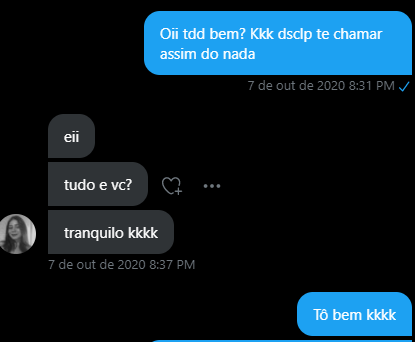
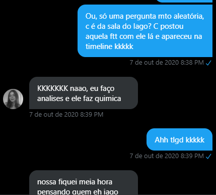
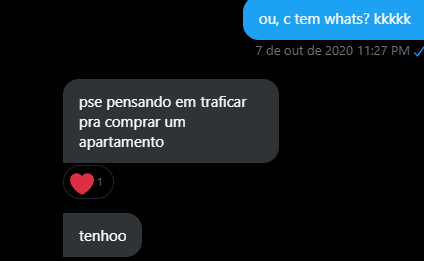
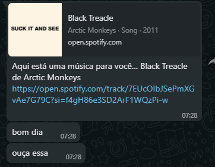
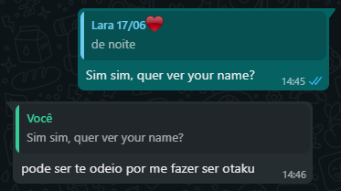

História da nossa amizade
Nossa primeira conversa
No dia 7 de outubro de 2020, eu por algum motivo chamei a Lara pra conversar no twitter, nós tinhamos alguns conhecidos/amigos em comum, então aproveitei para puxar assunto, eu havia visto ela por uma corrente que a Mari retweetou, e resolvi conhece-la:

Eu, com todo cuidado do mundo pensei em qual assunto puxar para continuar a conversa, daí eu lembrei de uma foto que estava a Lara e o pescador, que mesmo n tendo nenhuma ligação, podia ser um bom tema de conversa:

Desde esse momento a gente começou a trocar ideia, nós conversamos por algumas horas pela dm do twitter, até eu pedir o whatsapp, que foi aonde a gente realmente se aproximou mais. Muito bom que a gente se conhecia a algumas horas e você ja me falava seus planos de traficar.

Desde então a gente começou a conversar por meses, quase todo dia, era muito bom.
Depois de alguns meses a gente começou a se conhecer, e você me fez gostar de Artic Monkeys(mamacos articos), obrigado

Mais ou menos no meio de dezembro, eu comecei a pegar os códigos no picpay, para poder pegar spotify premium para viajar, e dia 18 eu fui para uma cidade do interior, nesse tempo a gente se afastou um pouquinho pq eu fiquei muito longe do celular

Depois disso tudo, eu voltei para casa depois de 20 dias, e a gente se aproximou mais ainda, começamos a conversar mais frequentemente, até em abril de 2020 que eu fui passar 2 semanas na casa da minha avó e vc foi viajar, la começou a história da Lara otaku

A partir daqui a gente começou a conversar mais, ir call com frequência, e você começou até mesmo enturmar com meus amigos. fico muito feliz de ter sua amizade.